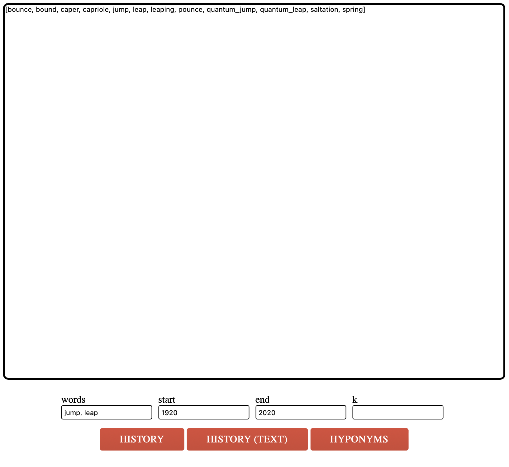

Project 2: NGordNet
Project that investigates the changes in the quantity of published materials in English over the years. NGordNet organizes words into clusters of synonyms known as synsets and outlines the semantic connections between these words. Among these relationships is the 'is-a' link, which associates a more specific term (hyponym) with a more general one (hypernym).
